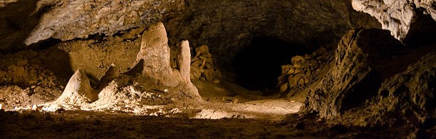

About The Cave
The cave is an artistic cultural center primarily concerned with the three Stone Ages. The center is divided into several sections, including educational, historical and cultural. It also allows the visitor to live the experience of ancient man in caves, and the visitor learns more about these eras through archaeological exhibits dating back to that era, in addition to the huge library that includes thousands of comic and digital books. There is also a complete educational department and classrooms concerned with teaching students handicrafts. Our first and primary goal is to spread the culture of ancient human history because that era was the first door to what human civilization has come to now in terms of development, arts, and the instinct to survive.